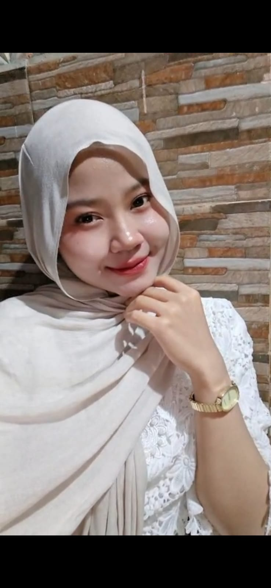

WT$ whoami
Mahasiswa Teknik Informatika yang sedang belajar menjadi backend engineer.
GitHub: 046trixi Bukti commitSaya ingin menjadi backend engineer karena saya tertarik dengan bagaimana sebuah sistem bekerja di balik layar. Selama kuliah, saya ingin memperkuat kemampuan pemrograman dan membangun berbagai proyek agar setelah lulus saya mampu membuat sistem yang benar-benar bermanfaat bagi orang lain.
$ ls proyek/ — daftar proyek yang sudah saya kerjakan selama belajar.
$ git log --oneline -5
(tempel keluaran git log Anda di sini)
| Tahun | Institusi | Jurusan | Pencapaian |
|---|
Halaman ini memakai tema Tech Stack karena saya ingin menjadi backend engineer dan terminal terasa dekat dengan pekerjaan itu. Warna pink #FE5BAC menjadi aksen neon di atas latar gelap agar tampilannya tetap khas dan mudah dibaca.